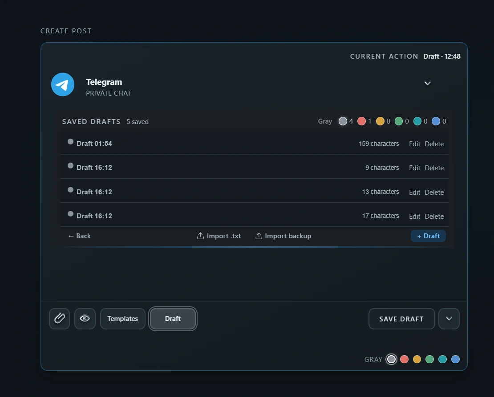

Подготовка публикаций
Черновики постов для Telegram: сохраните и продолжите позже
Идея или текст ещё не готовы к отправке? В XMSGi Studio можно сохранить рабочее сообщение с форматированием и вложениями, а вернуться к нему позже — без выбора чата и отправки.
Два способа оставить сообщение в черновиках
- Quick Planner: текущий текст, форматирование и вложения сохраняются автоматически. Кнопка Draft добавляет отдельную запись в список черновиков.
- Studio: текущий рабочий документ сохраняется автоматически. Сохранённые документы можно назвать, пометить цветом и открыть для дальнейшего редактирования.
Обе коллекции отображаются в общей панели Posts/History. Черновики Planner можно выбрать и перенести в Studio, в том числе несколько за раз.

Как подготовить пост без немедленной отправки
- 1. Напишите текстДобавьте форматирование и нужные вложения в Planner или Studio.
- 2. Сохраните работуОставьте текущий текст для автосохранения или добавьте отдельный черновик через Draft.
- 3. Продолжите позжеОткройте запись в Posts/History, внесите изменения и, когда будете готовы, выберите чат и время.
Где хранятся черновики
Черновики и их рабочие данные хранятся локально на устройстве: Planner использует локальное хранилище приложения, Studio — локальный файловый draft store. Облачной синхронизации черновиков между устройствами нет.
Черновик не является запланированным сообщением Telegram. Он не отправится сам: для публикации нужно отдельно выбрать отправку или расписание.
Частые вопросы
Нужно ли выбирать Telegram-чат, чтобы сохранить черновик?
Нет. Черновик можно сохранить без подключения аккаунта и выбора чата. Они понадобятся для отправки или планирования сообщения.
Черновик синхронизируется с Telegram или другими устройствами?
Нет. Черновики XMSGi Studio хранятся локально в приложении и не синхронизируются через облако.
Можно ли перенести черновик из Planner в Studio?
Да. Выберите сохранённые черновики Planner в панели Posts/History и передайте их в Studio для продолжения работы.